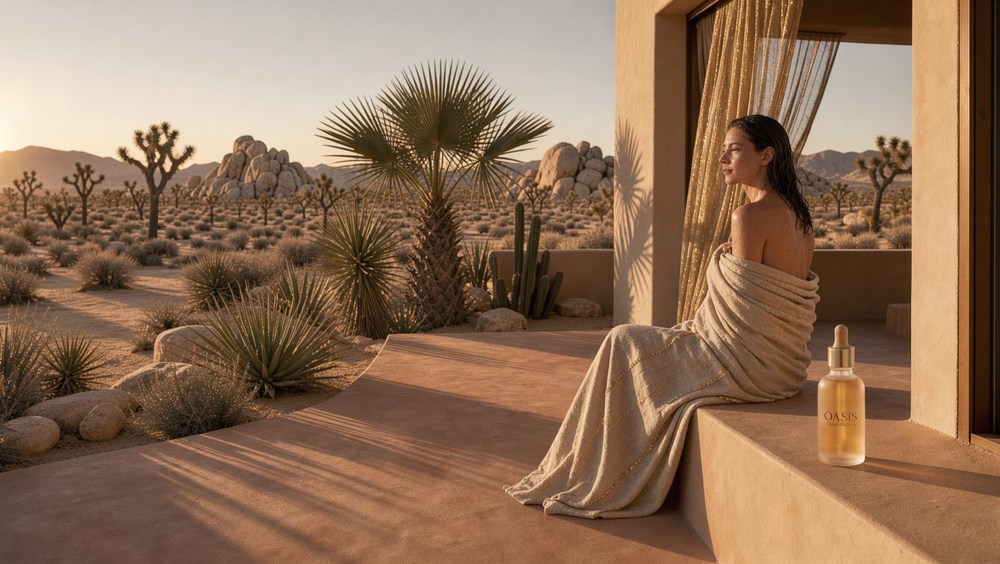
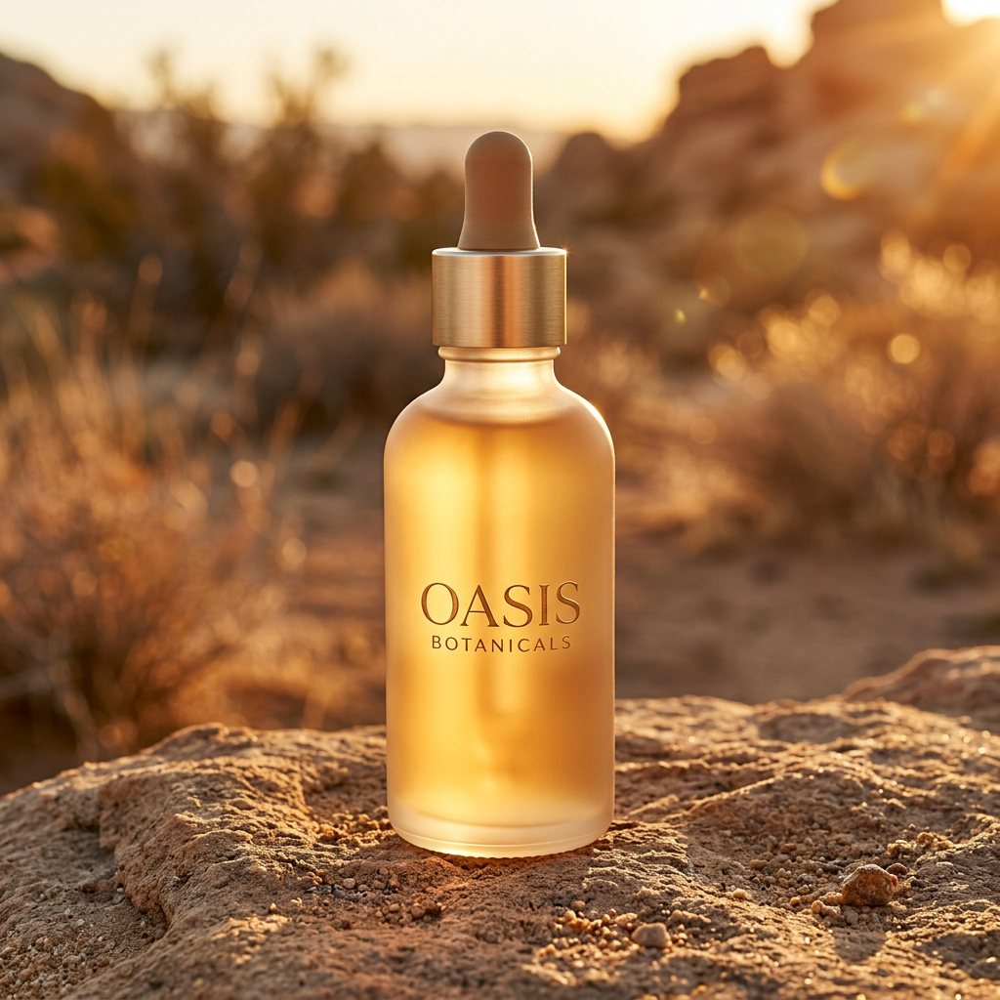
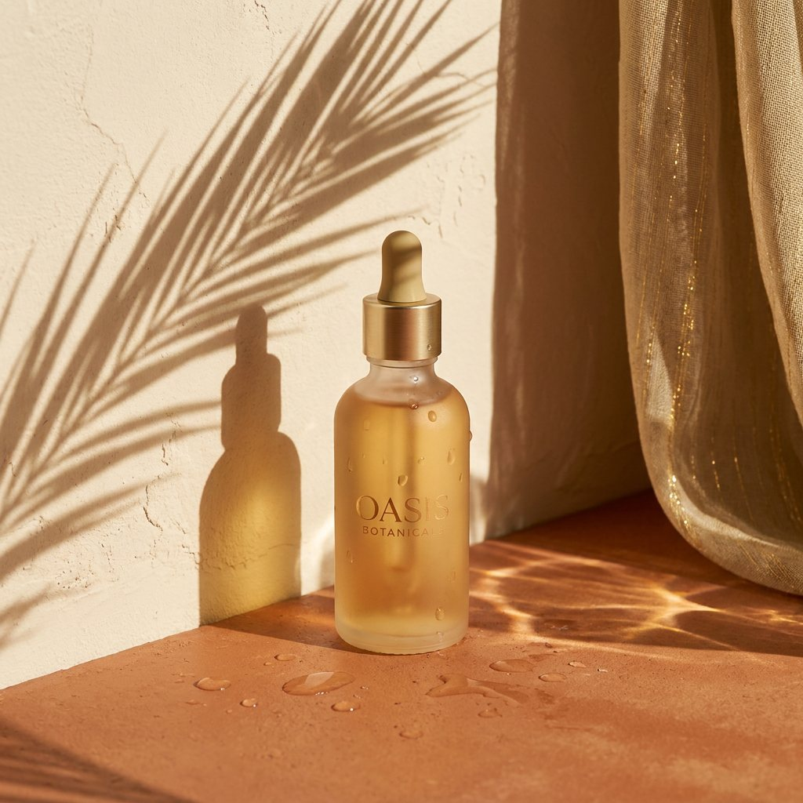
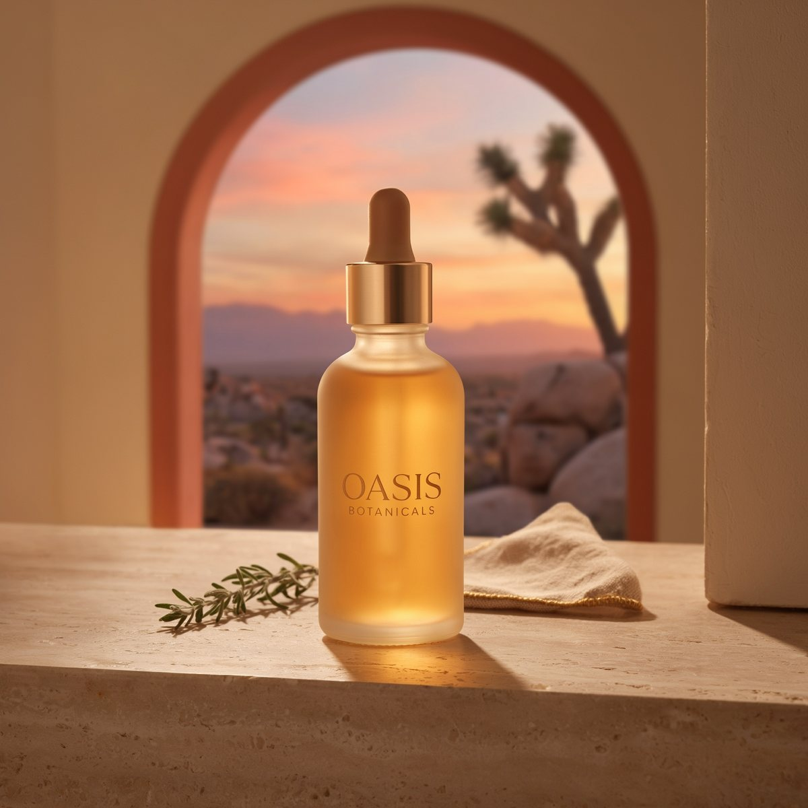
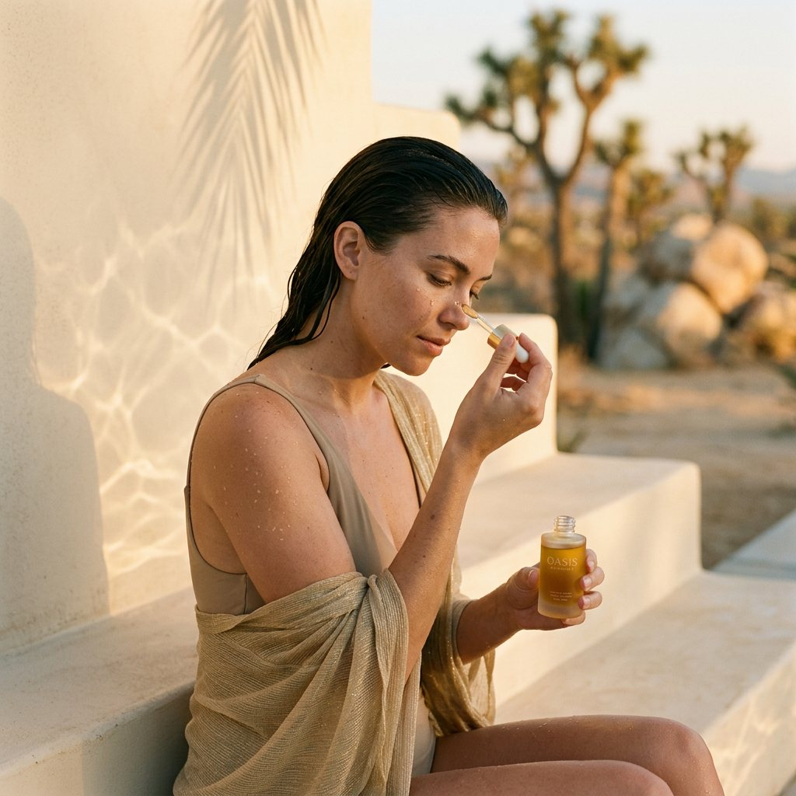
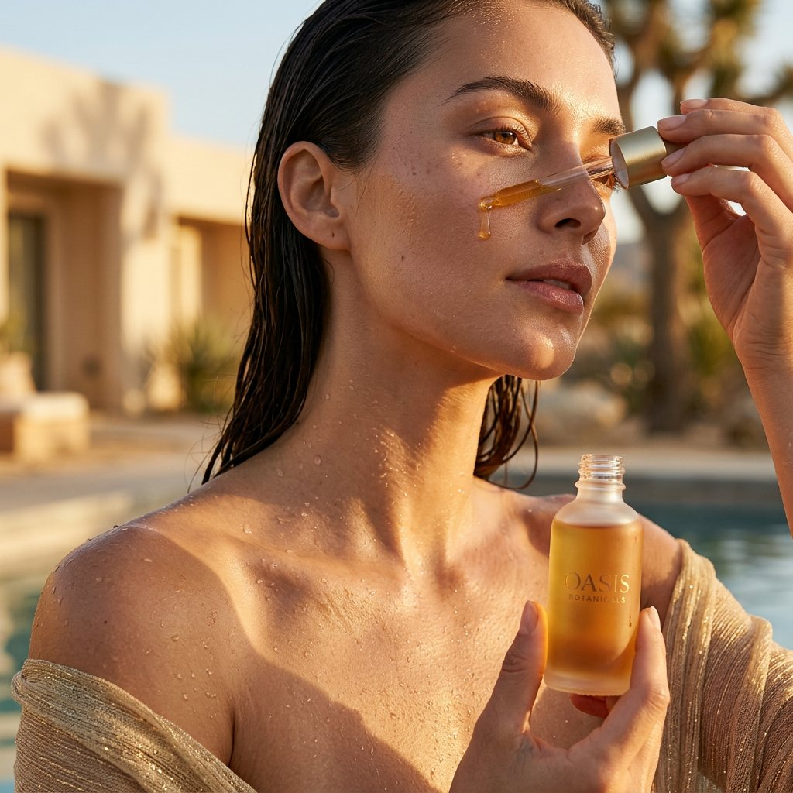
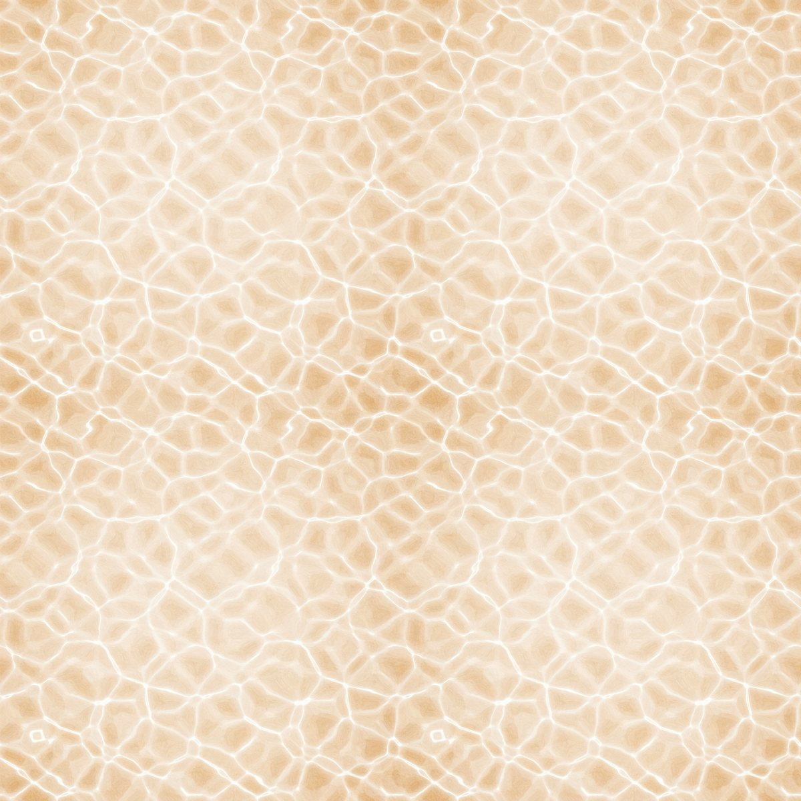
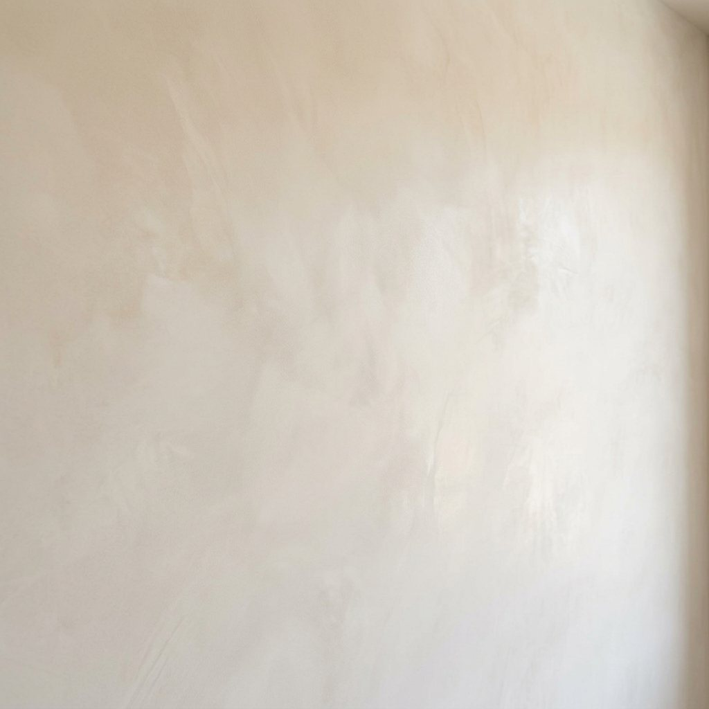

A launch visual system for a concept skincare brand, directed end to end on the FLORA canvas.
- Project
- Self-initiated brand concept
- Role
- Creative direction, art direction, AI workflow design
- Platform
- FLORA (node-based AI canvas)
- Models
- FLUX 3 Image, Nano Banana 2.1, Nano Banana Pro, Ideogram 4.5, Claude Sonnet 5
- Deliverables
- 1 homepage hero, 3 product shots, 2 lifestyle images, 1 pattern, 1 texture
The brief
Oasis Botanicals is a concept premium skincare line positioned as “desert luxury”: desert botanicals and minerals, natural ingredients, sophisticated simplicity. Its personality is calm, elevated, natural and precise, and its story begins in Joshua Tree.
The launch called for four kinds of assets: a homepage hero, product shots, lifestyle imagery and a brand pattern. With AI it’s easy to make seven beautiful pictures. The real challenge is making them read as one brand.

The idea: Where the Water Is
Joshua Tree hides real fan palm oases, green pockets where water surfaces in the Mojave against all odds. For a brand built against greenwashing, I rooted the look in that real place and its real light instead of a generic “desert spa.”
The mood references I pulled all shared one thing: low, raking light and the shadows it throws. So light became the system, with three rules every asset follows.
- Golden hour only. Low sun warms the granite and throws long botanical shadows.
- Water, implied. Wet skin, droplets and pool light dancing on plaster. You feel the oasis but never see the pool.
- Gold thread. Sheer, light-catching fabric says “resort” without a lounger in sight.
The palette pulls from the landscape: ocotillo terracotta, burnt sand, sunlight gold, yucca sage and plaster cream. The hero above puts the whole idea in one frame.
The system: build the bottle first
The key decision came before any scene: I generated the product once, then wired that single image into every other node as a reference. One bottle stays consistent across six images, which no amount of prompt wording achieves on its own.
Each image node also has a Claude Sonnet 5 text node in front of it. I write a short, intent-level seed; the text node expands it into a full shot description (lens, light, styling) so detail stays consistent without retyping it.
I matched each model to the job rather than using one for everything:
- Master bottle, Nano Banana 2.1. Strong with logos and type; turns a logo file into a believable label.
- Homepage hero, FLUX 3 Image. The most natural light for wide 16:9 scenes.
- Product, poolside, Nano Banana Pro. Rendered pool light on a plaster floor best.
- Product, inside, Ideogram 4.5. Held the arched window and landscape view cleanly.
- Lifestyle, Nano Banana 2.1. Keeps the bottle consistent while handling skin and hands.
- Pattern, Ideogram 4.5. Fast, clean, graphic results suited to a repeat.
Product shots: three surfaces, one bottle
Every shot uses the same bottle. What changes is the ground it stands on (granite, wet plaster, travertine), all drawn from the same place. The poolside shot carries the “water, implied” rule most clearly: no pool, just its light and a few droplets.



Lifestyle: after the swim
A quiet ritual, not a product demo: wet hair, a gold-threaded wrap and a single drop of serum pressed to the cheekbone. I directed a medium shot and a tight crop, because hands and droppers are where AI imagery most often breaks.


Pattern: the oasis as a texture
Rather than describe a pattern from scratch, I pointed a text node at the lifestyle image and had it turn the pool light on the wall into a tileable texture. The result is the brand name expressed as a pattern, in the exact light of the campaign. It’s built for packaging wraps, tissue and social backgrounds, with smooth plaster as a quieter backdrop layer.


Directing the output, not just generating it
AI makes confident mistakes, so I reviewed every image against the concept rather than against “looks good.”
- The bottle went honey-gold. I specified sand-toned frosted glass that glows when backlit, and every model read “glow” as amber serum. That makes it a real creative decision, not a quirk: the amber pops against terracotta, but it’s off-spec.
- “Unseen” is hard for AI. The lifestyle close-up still shows the pool, which breaks the implied-water rule, so the medium shot is the lead image.
- Place matters. The hero slipped in a saguaro-type cactus, which doesn’t grow in Joshua Tree. For a brand whose story is an actual place, that detail would need an inpaint before launch.
Next steps for production
- Lock the sand-toned glass with an edit pass on the master bottle, then re-run every node from it.
- Cast one consistent model across the lifestyle images.
- Clean the caustics into a true seamless repeat and mock it on packaging.
- Animate the pool light as a short loop for social.
My role
Creative direction, art direction and AI workflow design, from concept and model strategy through final selects.
The result
Eight launch-ready concept assets across four asset types, one consistent product and one visual world.
The takeaway is the same one that holds with a human team: the work gets consistent when the creative director sets the system first. On an AI canvas that means one concept, one light, one master reference and the right model for each job, then holding every output to the idea.